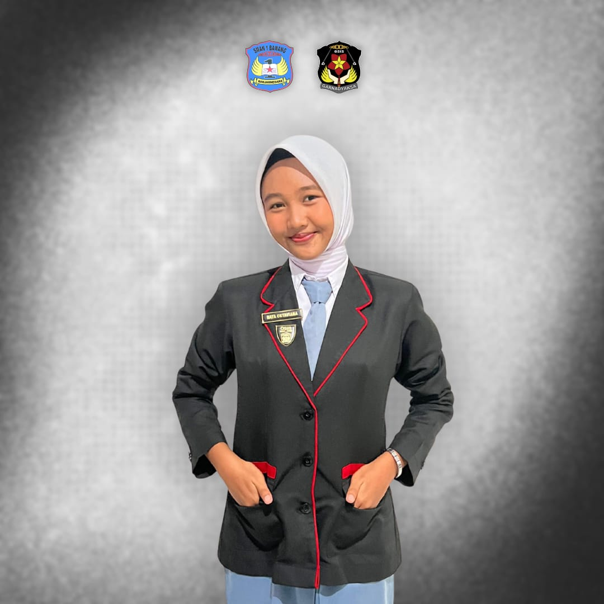
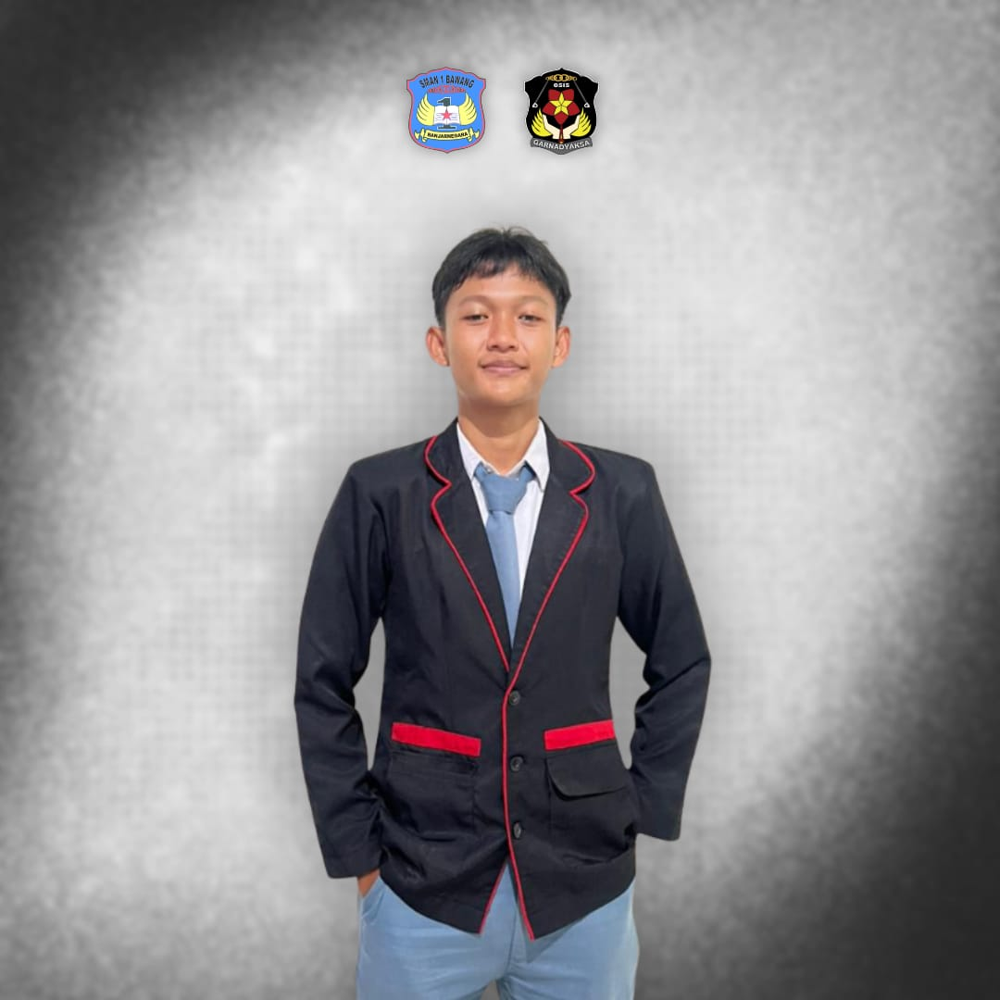
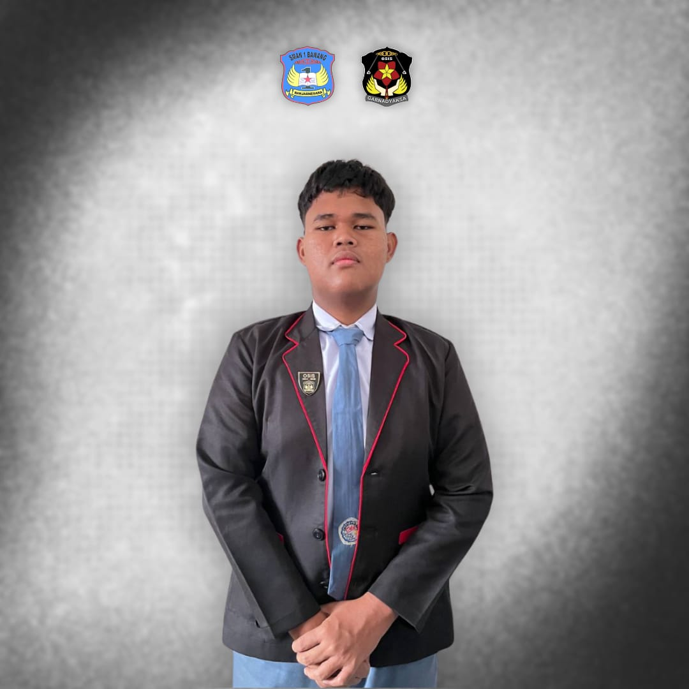
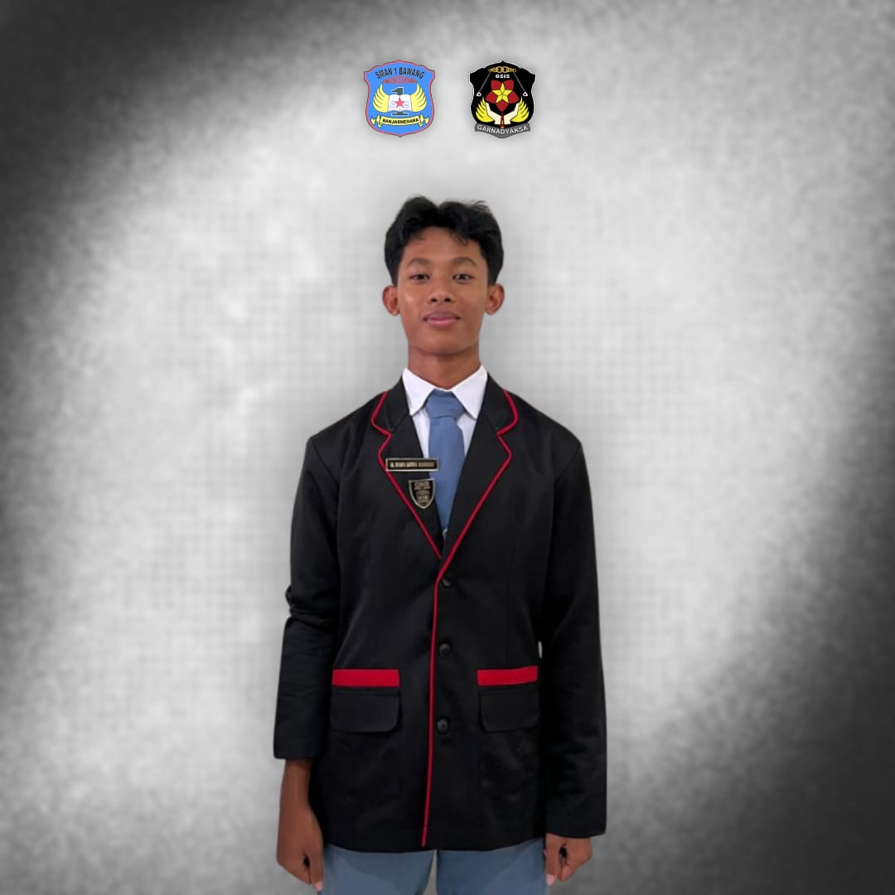
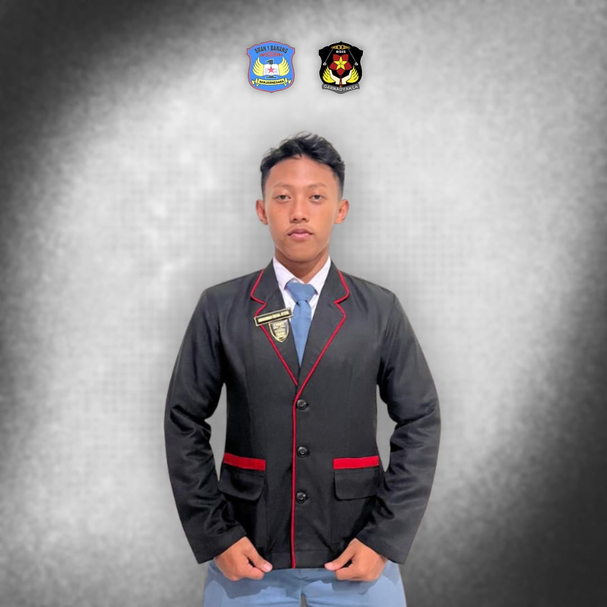
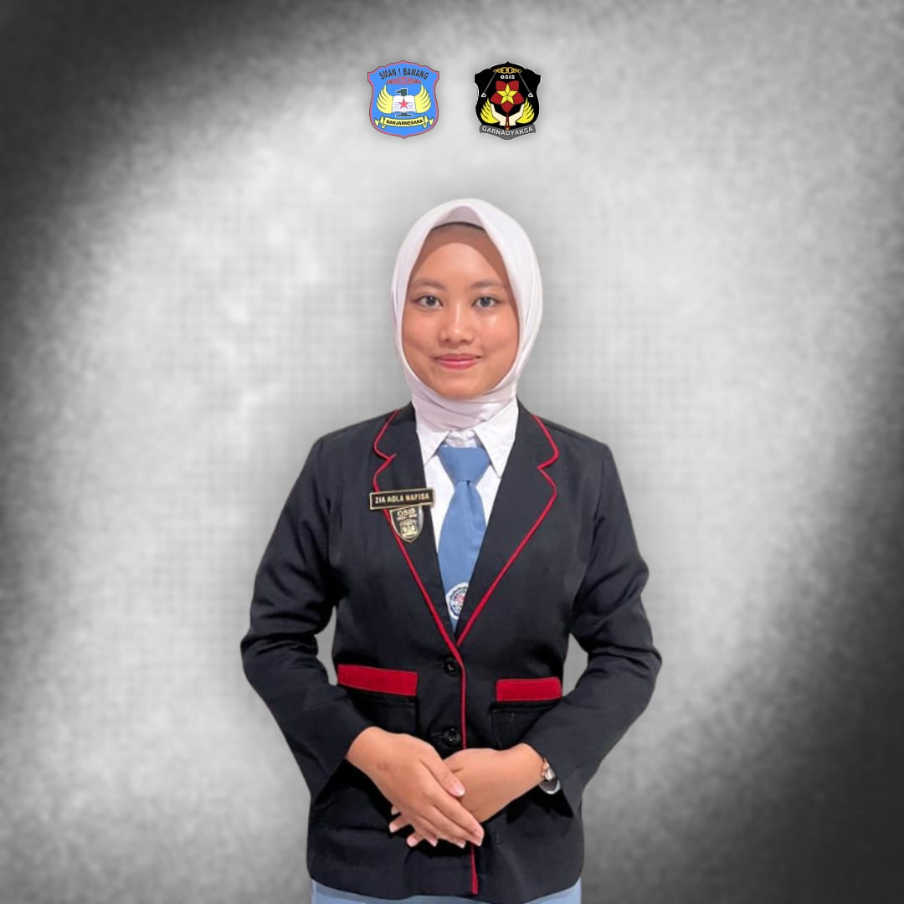

GARNADYAKSA






Sekbid 7: kebugaran jasmani dan daya kreasi
seksi bidang ini berfokus pada kebugaran jasmani dan daya kreasi sebagai wadah pengembangan potensi siswa melalui olahraga dan seni seperti penyelenggaraan kegiatan Pekan Olahraga Jeda Akhir Semester , E-sport, dan Liga OSIS.